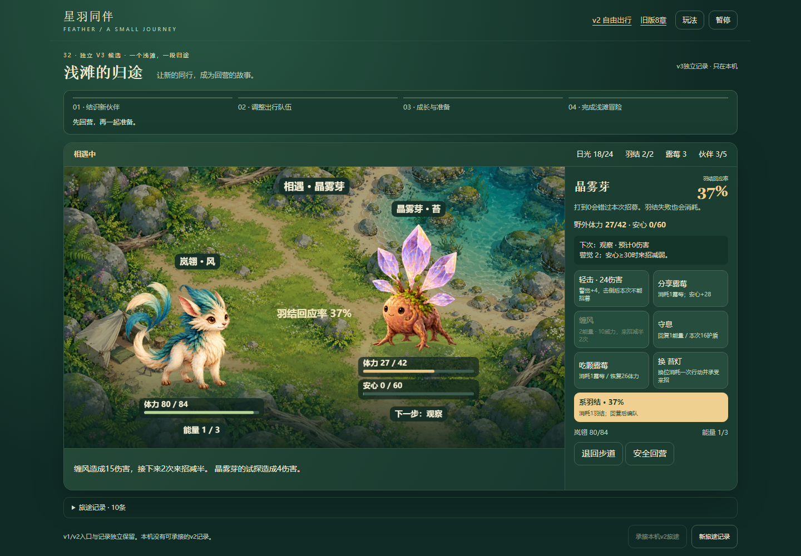
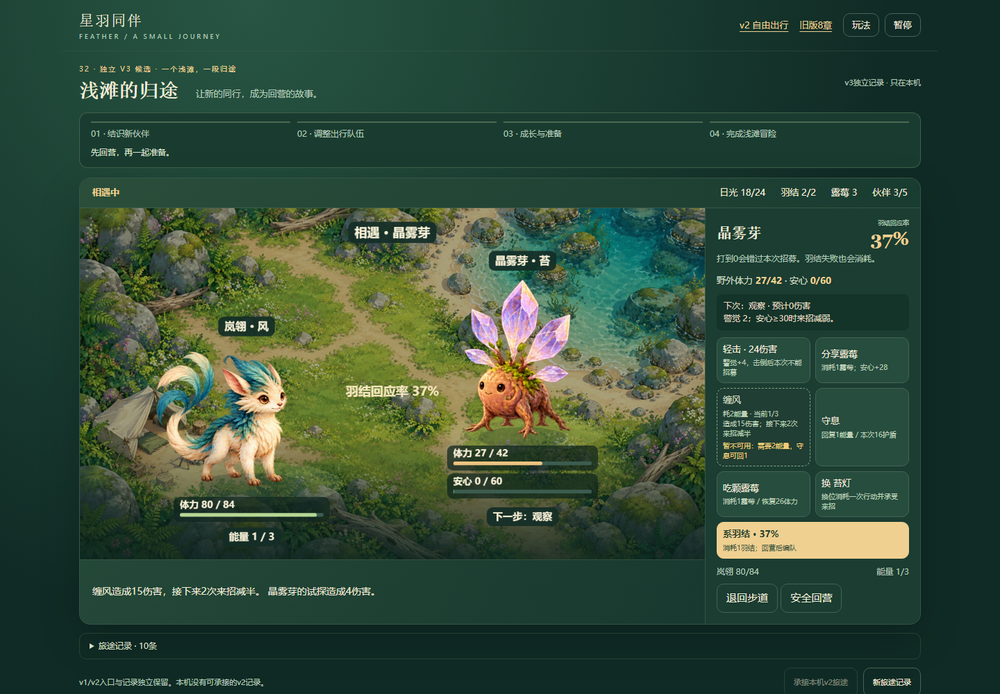
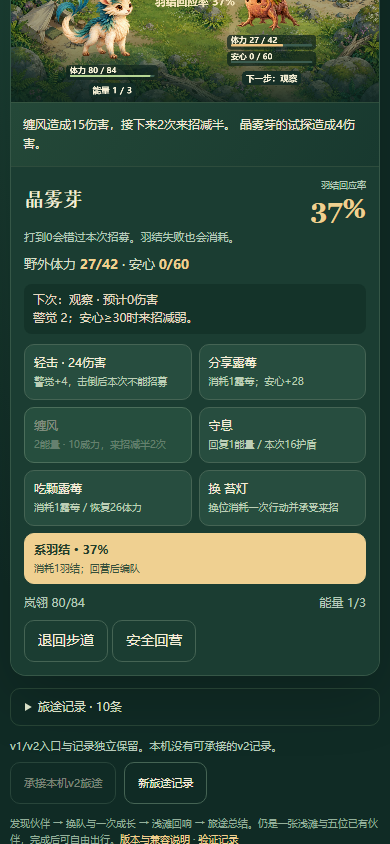
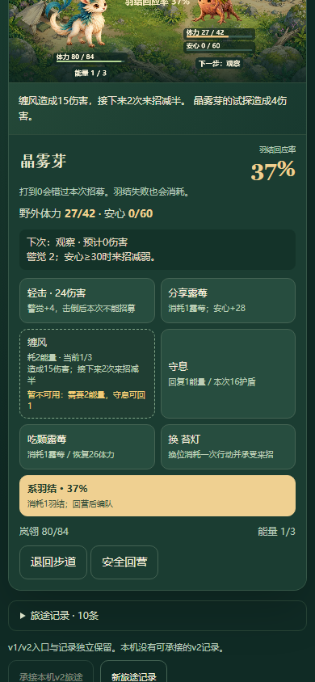
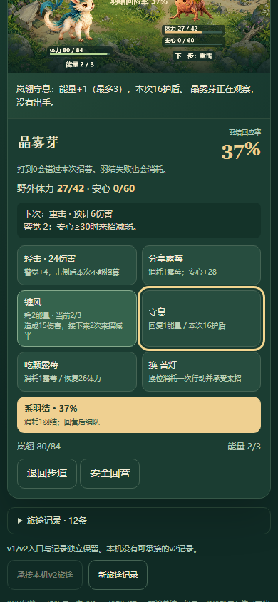
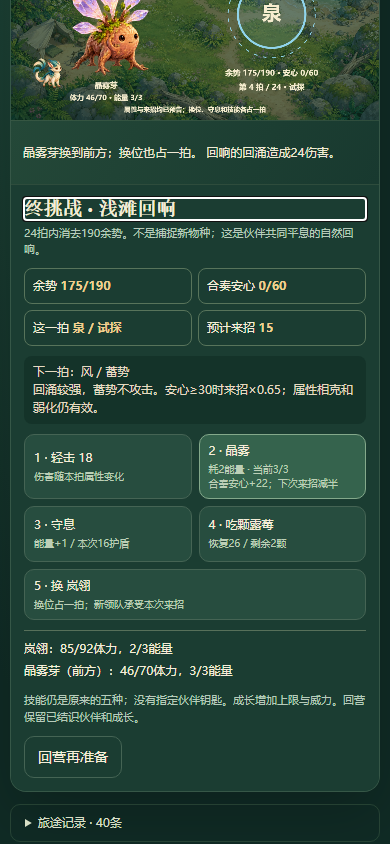
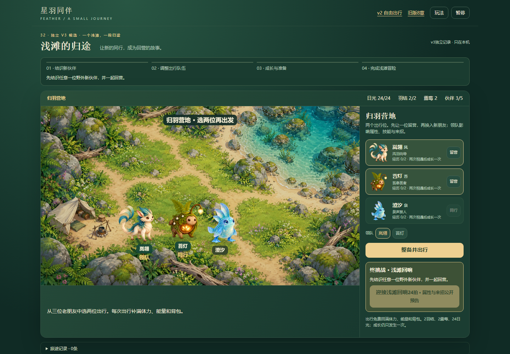
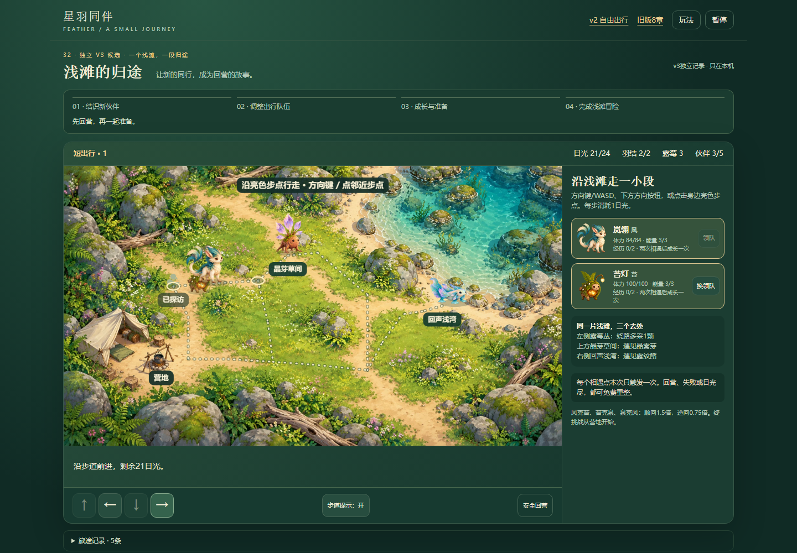

一个已有技能按钮的动态反馈改进：当前能量、当前目标效果、不可用原因。原伤害/资源/回合/存档规则不改；本轮不重复完整结局。
打开推荐短冒险 · 完整步骤与边界 · 修改前普通UI · 本地双视口 · 13组模型fixture · 三条后续候选 · 此前完整旅途 · 40项覆盖索引
本地1440×1000与390×844已分别检查；线上发布后同范围核验，实际结果与发布交付报告分列。390 CSS仅桌面模拟；fixture、已知路线脚本辅助与真人体验不能互换。未验真机、声音、性能、屏幕阅读器或审美。








已观察界面与源码；不是已确认玩法bug。营地仅显示角色定位与成长；玩家能选择同行，却要进入相遇才看到具体技能。当前改进只处理行动中技能，不处理选队前比较。
价值：让发现新伙伴后的换队选择有实际依据，减少盲选和往返试探。 验收：先用普通UI确认现有玩法帮助是否已足够；有价值才利用既有卡片显示或按需展开技能与属性，不强制指定队伍、不改技能；390与键盘可读可收起，原编队/保存不变。
已观察界面与源码；行动区已有清楚目的地，不是无目标或不可完成。新旅途刚出行时，顶部进度提示变为“先回营，再一起准备”，而尚未结识伙伴；右侧行动区仍正确说明晶芽草间与回声浅湾。
价值：保持跨界面的目标连续性，让玩家知道当前应先寻找伙伴还是带已结识伙伴回营。 验收：先验证新旅途/待入册/成长待完成三种普通UI状态；只在确有理解收益时改善当前指引，与既有四里程碑一致，不新增任务追踪系统/奖励/地图规则。
仅源码线索/待当前普通UI复现；未确认用户障碍。continue会清ending，campPanel完成文案写“旅途总结已记下”，但未见重读入口。本轮未重复自然结局，不能把源码线索称为已复现缺陷。
价值：完成短冒险后能回看伙伴与旅途成果，保留收束感；不是新增结局。 验收：先核现有记录/入口并用正常结局后自由出行复现；如确实无法重读，再在不重新结算、不改存档格式、不覆盖旧档的前提下提供只读入口，键盘和窄屏可返回。